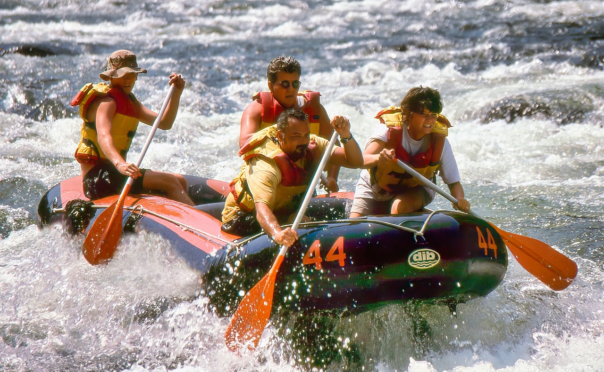

Rave of Ibaka

The Ibaka beach is a major part of the Ibeno River, flowing from the
center of Akwa ibom in a southern direction through the marina to
turn east in the north, then turning into the bakassi River which
joins to form the Ibeno River.
Ragatta Adventure

The Ibeno river runs from the high Eket ranges down through the
value Valley of the Ika, past Ikono and into the jungle. It has some
exciting white water depending on the section of the river being
done and the time of the year.
The Obolo River Rafting

The Obolo river (Speaker of the Gods) in the native Eastern Obolo
Language, is the most direct source of the Ibeno River, making it
the longest river in the Ibom. It has different sections , some of
them are very good for rafting.